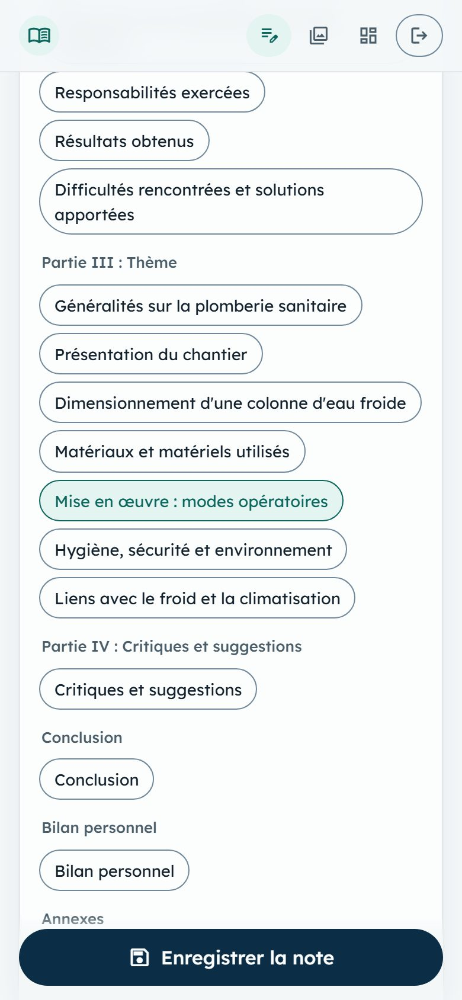
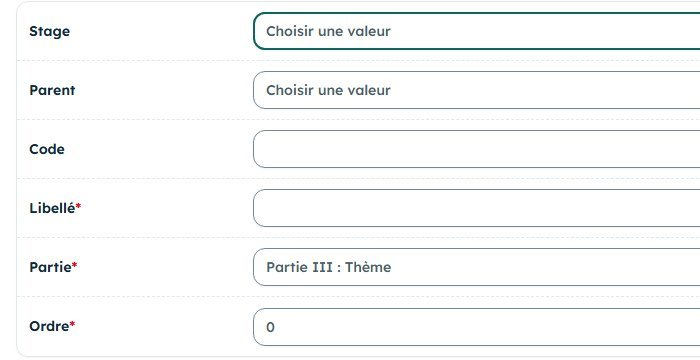
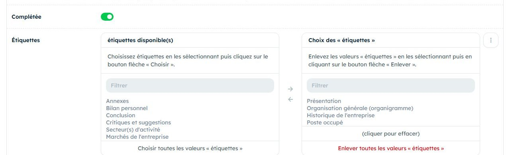
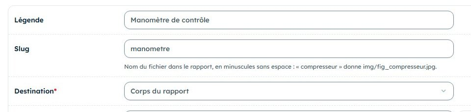

Le thème devient la Partie III, la plus longue du rapport. Aujourd'hui, vous en posez les chapitres et vous suivez une opération de bout en bout.

Ce qui change aujourd'hui
Vos notes ne sont plus seulement datées : chacune est rangée dans un chapitre du thème. À la fin du stage, chaque chapitre aura sa matière, déjà triée.
Le thèmeUn sujet que vous pratiquez sur place, lié à votre spécialité.
Les chapitresLe plan de la Partie III, créé dans le Carnet.
Le mode opératoireUne opération suivie étape par étape, en photos.
Le déroulé de la journée
Moment
Dans l'application
Durée
Pendant la semaine
Choisir le thème avec le formateur, le saisir dans le stage, créer les chapitres.
20 min
En arrivant
Valider le thème avec le tuteur. Note rapide : l'opération que vous suivrez.
5 min
Chaque étape de l'opération
Note rapide avec photo, étiquetée avec le chapitre concerné.
1 min
Une panne ou une reprise
Note rapide : ce qui a lâché, combien de temps, avec quoi on a réparé.
2 min
Le soir
Étiqueter, compléter l'onglet Intervention, légender les photos du corps, sauvegarder.
45 min
À préparer pour samedi
Deux ou trois idées de thème, notées après en avoir parlé avec le formateur.
Les chapitres créés dans le Carnet (page 2).
Tableau de bord du samedi 2 sans orange.
Téléphone chargé : une opération suivie, c'est beaucoup de photos.
Carnet de stageAvant de partir
Avant de partir : choisir le thème et poser le plan
Le thème se choisit avec le formateur au centre de formation professionnelle et se valide avec le tuteur en entreprise. Le Carnet n'impose rien : spécialité, thème et chapitres sont libres.
Un bon thème
Vous le pratiquez sur place, pas seulement en théorie.
Il se rattache clairement à votre spécialité.
Il donne des chiffres à mesurer ou à sourcer.
Où le saisir
Stage, champs Thème et Sous-thème.
Onglet Couverture : Titre du rapport, provisoire.
Un plan type
Généralités sur le sujet.
Présentation du site ou de l'installation.
Matériels utilisés.
Modes opératoires.
Hygiène et sécurité.
Créer les chapitres
Rubriques, ajouter, une fois par chapitre :
Stage : le vôtre.
Libellé : le titre du chapitre.
Partie : laisser Partie III : Thème.
Ordre : 1, 2, 3… pour l'ordre du plan.
Parent : vide pour un chapitre ; un chapitre existant pour un sous-chapitre.
Un seul niveau de sous-chapitres est permis. Le champ Code peut rester vide.

Vérifier : sur la note rapide, le volet Étiquettes du rapport montre vos chapitres sous Partie III : Thème.
Carnet de stageSur place
Sur place : suivre une opération de bout en bout
Choisissez avec le tuteur une opération de votre thème que vous verrez en entier aujourd'hui : une pose, une mise en service, une réparation. Elle deviendra un mode opératoire du rapport.
Une note par étape
Avant : photo de l'état de départ, outils préparés.
Pendant : une note et une photo à chaque geste important, avec la valeur réglée ou mesurée.
Après : photo du résultat et du contrôle final.
Sur chaque note, ouvrez Étiquettes du rapport et cochez le chapitre Modes opératoires (ou le vôtre). Une note peut porter plusieurs étiquettes.
Une étape bien notée commence par un verbe : « Raccorder… », « Serrer… », « Contrôler… ». Elle se recopie ensuite presque telle quelle dans le rapport.
Une étape, une photo, une valeur.
S'il y a une panne ou une reprise
Notez sur place ce que l'onglet Intervention demandera le soir :
la nature : ce qui a lâché ou a dû être refait ;
la durée d'immobilisation, en heures ;
le coût, en F CFA, si le chef d'équipe le connaît ;
les ressources : pièces, outils, personnes.
Hygiène et sécurité
Chaque opération a ses risques. Notez-les au moment où vous les voyez :
les EPI portés, et pourquoi ;
les consignes données avant de commencer ;
un risque évité, une situation dangereuse.
Photos : l'accord du tuteur vaut pour la journée, pas pour toujours. Redemandez si l'opération a lieu chez un client.
Carnet de stageLe soir
Le soir : ranger par chapitre, légender les photos
Étiqueter les notes
Journal, ouvrir la note, champ Étiquettes : passer le chapitre à droite avec la flèche. Le filtre par rubrique du journal regroupe ensuite toute la matière d'un chapitre.
Compléter l'intervention
Sur la note de la panne, onglet Intervention : nature, durée d'immobilisation, coût, ressources mobilisées.
Choisir les photos du corps
Corps pour celles qui illustrent une étape du texte, Annexe pour le reste utile. Restez sous 25 photos dans le corps : au-delà, le tableau de bord passe en orange.
Légende et slug
Chaque photo du corps ou de l'annexe : une légende qui dit ce qu'on voit, et un slug court, sans espace ni accent, unique dans le stage.

Étiqueter une note : choisir le chapitre à gauche, puis la flèche pour le passer à droite.

La fiche d'une photo, bouton Légende et slug du tri des photos.
Avant de dormir : compléter, trier, sauvegarder
Bouton Dossier terrain. S'il refuse, lisez le message : il nomme la photo à compléter.
Notes à compléter : 0
Jours sans note : 0 (trois samedis)
Photos à trier : 0
Dernière sauvegarde : Aujourd'hui
Au moins 3 chapitres du thème créés.
Rubriques du cours remplies : au moins 9 / 20
Carnet de stageFormation
Formation : s'entraîner avant samedi
Cinq exercices sur le compte de démonstration. Le compte est partagé : remettez en état ce que vous modifiez, comme indiqué.
Adresseesrventisax.pythonanywhere.com
Identifiantdemo.apprenant
Mot de passedemo-local-2026
Créer un chapitre et un sous-chapitre
À faire :Rubriques, ajouter « Mise en service d'un split » (stage de démonstration, ordre 8). Puis « Tirage au vide » avec ce chapitre comme Parent. Enfin, essayer un troisième niveau sous « Tirage au vide ».
Résultat attendu : les deux premiers sont enregistrés ; le troisième est refusé : « Un seul niveau de sous-chapitres est permis. »
Étiqueter une note
À faire :Journal, ouvrir une note de septembre, ajouter l'étiquette « Mise en service d'un split », enregistrer. Puis filtrer le journal sur cette rubrique.
Résultat attendu : le filtre n'affiche que la note étiquetée.
Lire une intervention
À faire :Journal, note du 1er juin 2026, onglet Intervention.
Résultat attendu : vous retrouvez la nature, la durée (3 h), le coût et les ressources, et vous savez ce qu'il faudrait noter sur place pour les remplir.
Provoquer un refus d'export
À faire :Trier les photos, filtre Corps du rapport, ouvrir « Polyfuseur et ses matrices » avec Légende et slug. Copier la légende, la vider, enregistrer. Tableau de bord, Dossier terrain. Puis recoller la légende.
Résultat attendu : « Export impossible : photo « polyfuseur » : légende manquante », puis l'export fonctionne de nouveau.
Nettoyer derrière soi
À faire : supprimer « Tirage au vide », puis « Mise en service d'un split », et retirer l'étiquette de la note.
Résultat attendu : les rubriques du stage de démonstration sont revenues à sept chapitres.
Carnet de stageFormation
Un mode opératoire exploitable
Un mode opératoire se lit comme une suite d'actions qu'un autre technicien pourrait refaire. Le récit de la journée ne suffit pas.
Récit à reprendre
« Après la pause on a branché la pompe et on a attendu un moment, puis le chef a dit que c'était bon et on a ouvert. »
Pas d'ordre clair, pas d'outil nommé.
« C'était bon » : selon quel contrôle ?
Étapes exploitables
« Raccorder la pompe à vide au manifold. Tirer au vide jusqu'à la valeur de la notice. Fermer, arrêter la pompe, contrôler la tenue du vide. Ouvrir les vannes de service. »
Un verbe d'action par étape.
Un contrôle avant de passer à la suite.
Exercice : remettre les étapes dans l'ordre
Tirage au vide d'un climatiseur split avant mise en service. Numérotez de 1 à 6.
Étape
N°
Démarrer la pompe à vide, manifold ouvert.
Ouvrir les vannes de service pour libérer le fluide dans le circuit.
Vérifier que les vannes de service du groupe extérieur sont fermées.
Fermer le manifold, arrêter la pompe et contrôler que le vide tient.
Raccorder le manifold à la vanne de service, puis la pompe à vide au manifold.
Tirer au vide jusqu'à la valeur indiquée par la notice du fabricant.
Ordre : 3, 6, 1, 5, 2, 4 (dans l'ordre des lignes du tableau). Les valeurs de vide et de durée se lisent dans la notice : saisissez-les comme valeurs de référence, avec la notice pour source.
Vérifier ses acquis
Mon thème est saisi dans le stage, avec un titre provisoire du rapport.
Je sais créer un chapitre et un sous-chapitre.
Je sais étiqueter une note avec un chapitre, et retrouver la matière d'un chapitre.
Je sais ce qu'il faut noter sur place pour remplir l'onglet Intervention.
Je sais donner une légende et un slug à une photo du corps.